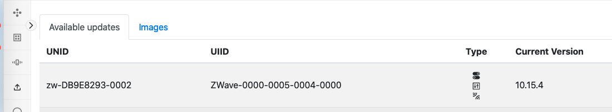
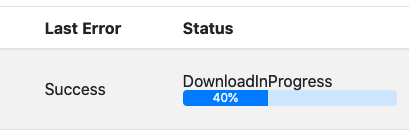
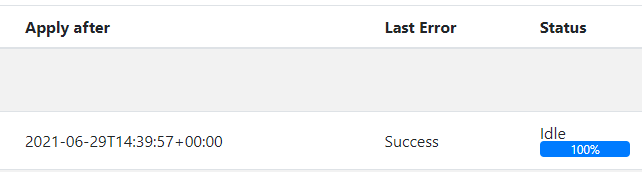
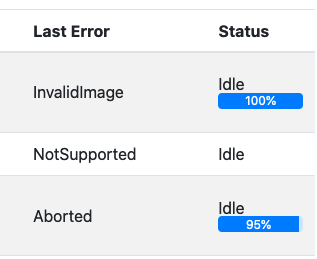

This user guide will guide the reader on how to install, configure and run the Z-Wave Protocol Controller (ZPC).
The ZPC translates the Unify Controller Language(UCL) into Z-Wave commands and communicates with Z-Wave devices in a Z-Wave network and is a full certifiable Z-Wave controller.
Files
The Debian package of the ZPC contains the following files:
| Path | Description |
|---|---|
| /lib/systemd/system/uic-zpc.service | Systemd service file |
| /usr/bin/zpc | ZPC application |
| /usr/bin/zpc_database_tool | Tool for database manipulation |
| /usr/bin/zpc_database_recover_tool | Tool for triggering a re-interview of all nodes |
| /usr/share/bash-completion/completions/zpc | script for bash auto completion |
| /usr/local/zpc/node_identify_rpi4_led.sh | script used by the indicator CC |
| /usr/share/doc/uic-zpc/copyright | copyright notice |
| /etc/uic/uic.cfg | Default location of config file |
| /var/lib/uic/zpc.db | Default location of database |
| /usr/share/uic/rules | Default location of mapping rules |
| /usr/share/uic/zwave_poll_config.yaml | Default location of network polling attribute list |
Configuration File
The configuration file is written in YAML and is used to set up the ZPC. The ZPC can dump the running configuration using the command line option --dump. The dumped file can be used as a starting point a config file.
Configuration file example:
Database File
The ZPC uses a sqlite database for storing network information. The default location of the database is /var/lib/uic/zpc.db. The database must be located in a writable part of the file system. If the database is lost, the ZPC will lose vital information about the network and need to probe all nodes in the network.
WARNING: the ZPC is not able to recover all lost information by re-interviewing, ie. the granted security keys for the nodes.
The best way to run ZPC is using the Systemd service that is installed with the Debian installer. For more information, see README.md.
Running ZPC From the Command Line
When running the ZPC from the command line provides an interactive Command Line Interface (CLI) is available. To get more information about the commands, type help in the CLI.
These are the steps to run the ZPC from the command line:
- Ensure Mosquitto broker is running, either by systemd
sudo systemctl start mosquittoor by runningmosquitto -din a terminal. - Run
/usr/bin/zpc.
NOTE: To get more information about command line arguments for ZPC, run
/usr/bin/zpc --help.
Note that the default permissions for the ZPC database file located in /var/lib/uic/zpc.db is only writable for the uic system user (which is created upon installation). If you run the zpc as another user, select a different database location.
For example,
Updating the NCP firmware
The ZPC is able to update the NCP firmware over the serial(USB) link. The firmware update is performed by providing a Gecko Boot loader file(GBL) at the command line when booting the ZPC.
There are two command line options to be aware of, --zpc.ncp_version and --zpc.ncp_update.
--zpc.ncp_version will print the chip and software version of the SerialAPI and exit immediately. This can be used to determine if the firmware should be applied or not.
--zpc.ncp_update performs a firmware update and exits the application when the update is completed.
If the firmware update succeeds the the exit code of the zpc will be 2 and if the update fails the exit code will be 1.
NOTE for the NCP update to work, a Gecko Bootloader and possibly signing certificates needs to be installed.
In the event that the firmware upload process get interrupted, the NCP may be left in bootloader. The ZPC will not be able to re-flash because it requires a functional serial API. In this case the device can be flashed manually using the xmodem tool sx from the debian package lrzsx:
Performing Firmware Updates of End Devices
The ZPC has the capability to perform Firmware Updates of end devices. Performing firmware updates requires ImageProvider" application to be run and configured correctly. The section below discusses on how to construct UIID and VERSION information that are required to perform firmware update of an end device.
Firmware updates can be triggered by providing the Image Provider with compatible firmware images and meta data information.
Once the a firmware update is successfully performed on an end device, the ZPC will automatically re-interview the device and present the capabilities of the device to the IoT services.
OTA UIID Construction
To upload an image for a Z-Wave node, compute a Unique Image Identifier (UIID) for this device.
The UIID for the ZPC is a string that can be constructed using the following information:
- The Manufacturer ID (Manufacturer Specific Command Class, 2 bytes)
- The Product Type (Manufacturer Specific Command Class, 2 bytes)
- The Product ID (Manufacturer Specific Command Class, 2 bytes)
- The Firmware Target (Firmware Update Command Class, 1 byte)
- The Hardware version (Version Command Class, 1 byte)
The string must be formatted using the following format with all values in hexadecimal: ZWave-<ManufacturerID>-<ProductType>-<ProductID>-<FirmwareTarget>-<HardwareVersion>
UIID/UNID Association
When the ZPC interviews a node, it will publish the detected firmware targets under the UIID space in the OTA cluster: ucl/by-unid/<UNID>/ep0/OTA/Attributes/UIID/<UIID>/#
For more details about available attributes under each UIID, see the the Unify specification - Common OTA FW Update Service chapter.
For example, if a node has 2 Firmware Targets, the publications may look as follows:
UIID ZWave-010f-1002-0b01-00-01 can be used to firmware update target 0. UIID ZWave-010f-1002-0b01-01-01 can be used to firmware update target 1.
Version String Calculation
The version of a firmware is determined based on the data reported by the Z-Wave node using the Version Command Class.
The version string will be composed of three decimal digits following semantic versioning. By default, the version for a given firmware will be fetched in the Version Command Class, in the Version Report Command. Only the Major and Minor digits can be retrieved from this report.
For example, if a node sends a Version Report with
- Firmware 0 Version = 3
- Firmware 0 Sub Version = 14
The resulting version string will be "3.14.0". No patch version number is available.
If a node supports the Version Z-Wave Software Report Command, the version string for Firmware 0 will be replaced by the Application Version field. For example, if a node sends a Version Z-Wave Software Report Command with:
- Application Version 1 (MSB) = 3
- Application Version 2 = 14
- Application Version 3 (LSB) = 15
The resulting version string will be "3.14.15".
Examples
This sections provides an example using the Image Provider and Developer GUI to perform a firmware update of a PowerStrip sample application.
First, make sure that the ZPC, Image Provider and Developer GUI are running.
Flash a PowerStrip application on a Z-Wave module with the OTA bootloader and GBL encryption keys. See the Z-Wave/Gecko SDK documentation in Simplicity Studio
Start the DevGUI and include a PowerStrip (or any other) sample application. At the end of the interview, the OTA Cluster page will show the UIID of the PowerStrip.

Prepare a GBL file with a newer firmware version that you upload to the Image Provider application. It will require several versions of the Z-Wave/Gecko SDK installed to access binaries with older or newer versions.
You can also perform the operation with an identical firmware image (or older) but the end node will reject the upgrade operation after the transfer.
Verify that your images are ready and readable:
Then, use the found UIID to configure the image.json file from the image provider. Remember to set a version string as well as calculate the Md5 as described in the Image Provider User Guide:
Shortly after, the Image Provider will announce the image(s) over MQTT and the ZPC will download this image, if some nodes in its network have matching UIIDs. The Dev GUI will show the Image Provider announcement under the "Images" tabs in the OTA cluster page:

As soon as the ApplyAfter timestamp is passed, you will be able to observe the firmware transfer operation under the DevGUI:

When the firmware update is finished and successful, it will look as follows:

The following conditions have to be met for a successful firmware transfer:
- The Size/Offset attributes are non-zero and set to the same value (The DevGUi will show 100%)
- The LastError attribute is set to "Success"
- The Status attribute is back to "Idle"
for example:
This state will only be visible for a very short time, as the ZPC will re-interview the node and will unpublish its state and capabilities for the time of the interview.

Possible Errors
There are a few possible errors described in the Unify specification. The LastError attribute indicates the status of the last Firmware Update/transfer attempt.

- InvalidImage This error happens if the node rejected the image. Reasons can include the signature verification, the version downgrade protection or a wrong checksum.
- NotSupported This error happens if the node's firmware is not upgradable. This error will be reported by the end node before any transfer is attempted.
- Aborted This error can happen if the transfer could not complete without a timeout.
In the case of an abort, you can retry a Firmware Update by modifying the Image Provider list of images. Remove the UIID(/UNID) combination, wait for the image Provider to advertise that the image is no longer available, and modify back the image list with the desired UIID(/UNID) combination.
Understanding how the ZPC Works
The purpose of this section is to explain the ZPC behavior and how to correlate frames seen on a Z-Wave Zniffer with operations performed by the ZPC.
Discovery and Operation
The ZPC performs network discovery and operation of for both listening and non listening devices using a software component called the attribute system.
The basic idea of the attribute system is that all network state parameters have a reported value and a desired value. The following are examples of state parameters:
- is the lamp on
- is the door locked
- current room temperature
- ...
The reported value of an attribute is data about the current attribute state that the device has communicated to the ZPC. If the device has not told the ZPC what the value is, the reported value is unresolved.
The desired value is the user-preferred attribute value, such as user wants the light to be off. Note that it does not make sense for all attributes to have a desired value. In other words, a smoke detector should not have a desired value to prevent a user from turning it off or setting the smoke to go away.
The ZPC attribute system is used to resolve an unresolved attribute using a set of rules. For instance, you can get the binary switch value of a Z-Wave Binary Switch node by sending the Z-Wave BINARY_SWITCH_GET command. If the attribute system notices that the desired value of an attribute is different than the reported value, the ZPC will issue a Z-Wave SET command.
NOTE the ZPC will only send a SET command if it notices that the reported value of an attribute is different than the desired. The ZPC will do its best to make sure that it has the right reported value by setting up Lifeline associations, but there may be situations where the ZPC has outdated information.
If a node supports supervision, the ZPC will use supervision encapsulation when sending a SET command. In this way, the ZPC will update the reported value automatically when sending a SET command. If a node does not support supervision, the ZPC will mark the reported value of an attribute unresolved when sending a SET and this will trigger a new GET command for the attribute to update the reported value.
Currently, when the ZPC sends a SET command with supervision encapsulation and the device reports the supervision state working, the ZPC will not reflect this on the MQTT side. The reported value will be updated on MQTT side when the supervision state OK/FAILED is received.
In the event that a node does not adapt a set value or does not answer a get command the ZPC will try the ZPC command 3 times with a 20 second interval.
Wake up device support
The Z-Wave Wake up devices are supported by pausing node resolution when the device is sleeping, which means that if the temperature of a thermostat is changed multiple times while the device is sleeping, the ZPC will only send the latest change using thermostat set point command. The ZPC will send wake up no-more information when there is nothing more to resolve regarding the node.
The default wake up interval used by the ZPC can be configured with the option zpc.default_wake_up_interval.
Failing nodes
The ZPC has a mechanism to detect if nodes in the network has become unresponsive. If consecutive transmissions to node has failed for a number of times, or if consecutive wake up information's has been missed from a node, that node has become failing and the ZPC will update the node State topic to FAILING. As soon as a frame, either application frame or Z-Wave acknowledgement frame, has been received from the node the ZPC will revert the node state to INCLUDED. The ZPC will periodically send NOP frames to listening and FLIRS failing nodes to check if they are resounding again.
The NOP interval of failing nodes is
- 4 * 2^n for Listening devices
- 40 * 4^n for FLiRS devices
The threshold values for the number of failed transmissions and missing wake up notifications can be configured with the options, zpc.accepted_transmit_failure and zpc.missing_wake_up_notification
Network Polling
The ZPC relies on reports from the Z-Wave nodes in order to keep the state the network. However, some devices may not report state updates when there are change in the network. To fill this gap, The ZPC SDK includes network polling feature where the state of a given attributes are periodically updated via sending a request to the Z-Wave node.
To enable the network polling feature, the user shall provide a list of attributes and their expected polling interval in yaml configuration file. If the controlling node get the attribute state update due to the user request or unsolicited report, the polling will be postponed. Note that the polling interval represents the maximum 'age' of a given attribute state. The polling interval value shall be presented in seconds and the interval should be included distinctly for the Z-Wave Device Types:
- polling_interval_zwave: represents Z-Wave Devices that are not represented in Z-Wave Plus or Z-Wave Plus v2 Device Types
- polling_interval_zwave_v1: represents Z-Wave Plus Device Type
- polling_interval_zwave_v2: represents Z-Wave Plus v2 Device Type
If there is not any polling interval for specific Z-Wave device type, the polling interval should not included for that specific device type. It is also important here to specify attributes types that have a resolver get rule registered.
The Z-Wave attribute lists yaml configuration file example:
Attribute types can be provided either as their name like above, or with their type id, like attribute_type:0x002502
When the ZPC is installed on the Debian Buster platform the sample configuration (i.e., the sample contains the recommended attribute types that may require periodic polling based on the device type) file will be located in:
Besides, the user would also configure the minimum interval between two consecutive poll request (i.e., zpc.poll.backoff) and default polling interval (i.e., zpc.poll.default_interval) incase the attribute is registered to be polled without an interval. These values should be included in Configuration File used to set up the ZPC. The default backoff interval is set to 30 seconds. This value is selected based on experience and a user can configure a value above 1 second based on their network needs. Note that the minimum rate limit between two consecutive poll request is 1 second as it is discussed in the Z-Wave Plus role Type Specification in Polling Devices section.
Dotdot Cluster to Z-Wave Command Class Mapping
Overview
The ZPC maps dotdot clusters to Z-Wave command classes and vice versa. All maps are defined by a set of configuration files which the ZPC loads as boot. Default files are installed in the /usr/share/uic/rules directory. The mapping file extension is *.uam which is short for Unify Attribute Map.
The following table has a brief description of how ZCL clusters are mapped to Z-Wave command classes, by default.
| DotDot Cluster | Z-Wave Command Classes | Notes |
|---|---|---|
| OnOff | Binary Switch Basic Multilevel Switch | The DotDot OnOff commands (On and Off) are mapped to Z-Wave Binary Switch Set command or Basic SET |
| OccupancySensing | Notification | The Z-Wave Notification Report command is mapped to Occupancy and OccupacyType DotDot attributes |
| IASZone | Notification | |
| Illumiance level sensing | Notification | |
| DoorLock | Door Lock | The DotDot DoorLock commands (LockDoor and UnlockDoor) are mapped to Z-Wave Door Lock Set command |
| Thermostat | Multilevel Sensor Thermostat Setpoint Thermostat Mode | The DotDot SetpointRaiseOrLower and WriteAttribute commands are mapped to Thermostat Setpoint and Thermostat Mode Commands |
| TemperatureMeasurement | Multilevel Sensor | |
| Level | Multilevel Switch | |
| IASZone | Battery |
Configuring maps
Additional maps can be added, or the existing default maps can be modified as needed. Maps are normally used for dotdot/Z-Wave value conversion, but they can also be used to:
- Fill device data automatically, and skip interviewing known properties
- Configure/Set certain values automatically
Mapper file structure
A mapper file template could be as follow:
Mapper grammar and keywords
The mapper allows to manipulate attributes that are stored as 32-bit signed integer values. Each attribute can use the following "value states":
rfor reported valuedfor desired valueefor the existence of the attribute. (evaluates to true/false depending on if the attribute exists)
The value states must be used in front of attribute types, using a ‘’character. To perform an assignment, the=` sign can be used. For example, if the reported value of attribute type 1 should take the desired value of attribute type 2, the following expression can be used:
Note: Assignments to reported values will trigger attribute creations in the attribute store.
d'1 = r'2will not create attribute type 1 and set its desired value if it does not exist.r'1 = r'2will create attribute type 1 and set its reported value if it does not exist.
The mapper constantly monitor attribute updates, so whenever the desired value of attribute 2 is updated, the reported value of attribute 1 will be adjusted.
To avoid using raw type values, the mapper allows to define value substitutions using the def keyword. For example, the example above could be expressed as:
Regular operators can be used to modify the value. The available operators are:
| Operator | Name |
|---|---|
| + | Addition |
| - | Subtraction |
| * | Multiplication |
| / | Division |
| & | bitwise AND |
| | | bitwise OR |
For example, if a value needs to be multiplicated by 2 and incremented by 1:
It is strongly recommended to use parentheses around operations, as no priority handling is implemented in the mapper.
Conditional statements are also available for maps. The available comparison operators are:
| Operator | Name |
|---|---|
| == | Equal to |
| > | Greater than |
| < | Less than |
These operators should be used with if statements. The if synthax is as follows: if condition value. A switch-like statement can be made using multiple if statements.
Note in the example above that line breaks and indentation does not have any impact, and are just used for readability. The statement can be written in one line too. This is an example from the ZPC default maps, which determines if the reported value of the battery low flag should go to 1 or 0 based on the reported battery percentage.
Note that bitwise operators & and | can be used for evaluating a set of boolean expressions:
A special undefined keyword can be used to abort assignment evaluations. For example, to set the reported value of an attribute only if another attribute exists, the following map can be used:
Additionally, a special or keyword can be used for fallback values:
Tree navigation operators can be used to navigate the attribute store tree, for when attributes are organized in a more complicated manner.
| Operator | Name |
|---|---|
| [] | Reported value navigation |
| . | Child navigation |
| Parent navigation |
[!WARNING] Parent navigation operator is currently not working.
All attributes are placed under an attribute representing an endpoint. If trying to navigate up the tree, the parent is the endpoint attribute.
Finally, all map assignment must have a scope. Multiple scopes for a given map file are not yet supported, but it will allow in the future to prioritize set of instructions.
Attribute types
To configure a map, the attribute types that will be mapped must be identifed first. Each Command Class has a set of defined attribute types that it allocates in the attribute store under endpoints.
The CLI can be used on a running ZPC to print out the attribute store and its contents. It is an easy and quick way to find out the list of attribute types and their values for a given NodeID. For example, showing the attribute store data for NodeID 4:
Z-Wave Attributes
Most Z-Wave attributes types are defined in the attribute_store_defined_attribute_types.h header file. Most of the time, attributes are stored directly under the endpoint. In this case, the attribute can simply be referred to with its type.
For example, the Basic Value reported in the Basic Command Class is defined here:
The value of ATTRIBUTE_COMMAND_CLASS_BASIC_VALUE is 8194 or (0x2002), so it can be referred to as follow in a uam file:
Some attributes are defined as part of the auto-generated code. The list of command classes using auto-generated code can be found in the list of supported/controlled command classes. If a command class is auto-generated, there will be a header file in the build folder containing attribute type definitions. For example, for the Door Lock Command Class, refer to zwave_COMMAND_CLASS_DOOR_LOCK_attribute_id.h
When mapping, we have to be aware of the tree structure. Sometimes, attributes are placed a few levels under the endpoint. When this is the case, command class handlers describe how the tree structure is organized in a PlantUML diagram included in their header files.
In general, it is recommended to reuse the attribute types defined in the existing maps, rather than investigate how attribute may be stored in the attribute tree.
DotDot Attributes
Dotdot attributes are automatically determined by their Cluster ID / Attribute ID. They are in most cases placed directly under the endpoint.
The 32 bits values is composed by doing cluster_id<<16 + attribute_id. For example, the OnOff attribute (id = 0) of the OnOff Cluster (id= 0x0006) is 0x00060000.
The Basic Cluster (cluster id = 0) is an exception, to avoid collisions with Z-Wave attributes. Instead, cluster id 0xba5c is used for the Basic Cluster.
If some non-standard attributes are saved (e.g. group ID and Group names for the group cluster, their definitions is added to attribute_store_defined_attribute_types.h)
Device fingerprints
A few of the default maps give examples of device fingerprints. It is recommended to use the Manufacturer ID, Product Type and Product ID, as a minimum.
A more complete fingerprint can include the version of a product, as well as its hardware version. This is equivalent to the fingerprinting of devices prior to perform OTA firmware updates.
The firmware version is stored as (major << 16) | (minor << 8) | patch.
Mapping between Z-Wave and DotDot
To establish a map that reports data on DotDot, we usually need to set reported value of the DotDot attribute to match the reported value or the Z-Wave Attribute.
DotDot attributes, once set, are detected and published automatically on MQTT. This map will for example publish an OnOff attribute for a Binary Switch value.
Given that only the reported is mapped, if an MQTT client tries to set the DotDot OnOff attribute with a command, nothing will happen on the Z-Wave side.
To make Z-Wave values updates based on DotDot commands, the desired value change of a dotdot attribute should be mapped to an update of the desired Z-Wave value:
Automatic lifeline/association establishment
The ZPC can be configured through maps to establish associations. The ZPC associates itself whenever the AGI group profile of an association group is set to 0x01 or 0x00.
If the ZPC is the SIS and the AGI profile is set to 0x0001, it will establish an association forcefully, i.e. it will remove nodes from the association if this group is already full to get associated itself.
In any other cases (ZPC is not the SIS or group profile is set to 0x0000), the ZPC will associate itself only if there is capacity left in the association group.
Migrating to ZPC from Z/IP Gateway
This section describes how to migrate to a ZPC from a Z/IP gateway. If migration from a third party gateway is desired, the first step in the migration process is to migrate to a Z/IP Gateway.
To successfully migrate, the following Z/IP Gateway SDK tools are needed.
zw_programmerIs required for programming new firmware on the Z-Wave modules and for reading and writing the Z-Wave controller module NVM.zw_nvm_converterthis tool is used for converting the Z-Wave NVM between protocol versions. The tool can be use to migrate from a 500 series Z-Wave chip to a 700 series chip.
You can get Z/IP Gateway through Simplicity Studio. Read the Z/IP Gateway SDK user guide on how to compile and install the Z/IP gateway on your platform.
For Z-Wave Long Range support, the ZPC requires a Z-Wave API controller version 7.16 or higher. For details about migrating between protocol versions see the Z/IP Gateway manual, Migration Support Tools
To ensure that the ZPC is working correctly, it must have access to the network encryption keys as well has information about which security keys have been granted to each node in the network. The Z/IP Gateway stores the encryption keys in the right place in the module NVM for the ZPC to read.
In general, the ZPC will query all network information from the nodes in the network on the first boot, but it needs to know which network keys have been granted to the nodes in the network. The Unify SDK contains the tool zpc_database_tool; which can be used for manipulating the ZPC database. zpc_database_tool can import/export the ZPC database from/to a JSON file. The easiest way to set the granted key information is to do the following:
- Migrate the Z-Wave controller using the Z/IP Gateway SDK tools as described above.
- Start the ZPC with the migrated Z-Wave controller module but with an empty database file.
zpc --zpc.datastore_file datastore.db - Shut down the ZPC by typing
exiton the console. The ZPC will now have created an initial database which matches the Z-Wave network. - Use the zpc_database_tool to export the database to a JSON file
zpc_database_tool --zpc.datastore_file datastore.db --export datastore.json - Open and edit the JSON file and locate the following attributes under each ATTRIBUTE_NODE_ID object:
- ATTRIBUTE_NETWORK_STATUS must be set to "reported": "00"
- ATTRIBUTE_KEX_FAIL_TYPE should be set to "reported": "00"
- ATTRIBUTE_S2_DSK this is optional but should be set the DSK of the node.
- ATTRIBUTE_NODE_IS_S2_CAPABLE should only be defined if the node supports S2
- ATTRIBUTE_ZWAVE_INCLUSION_PROTOCOL must be set to 1 if the node was included using Z-Wave long range and should be 0 otherwise.
- ATTRIBUTE_ENDPOINT_ID: all endpoint objects besides endpoint 0 must be removed. Endpoint 0 should only contain the ATTRIBUTE_ZWAVE_NIF with no desired or reported values.
ATTRIBUTE_GRANTED_SECURITY_KEYS is a bitmask of which network keys a node have been granted the following keys are currently defined:
Key Mask ZWAVE_CONTROLLER_S0_KEY 0x80 ZWAVE_CONTROLLER_S2_UNAUTHENTICATED_KEY 0x01 ZWAVE_CONTROLLER_S2_AUTHENTICATED_KEY 0x02 ZWAVE_CONTROLLER_S2_ACCESS_KEY 0x04 Ie if a node has all keys the granted keys attribute should be `{ "type": "ATTRIBUTE_GRANTED_SECURITY_KEYS", "reported": "87"} `
- With the updated JSON file, a new database can be constructed with zpc_database_tool.
zpc_database_tool --zpc.datastore_file datastore.db --import modified_datastore.json - You can now start the ZPC as usual. The ZPC will start probing all nodes, sleeping devices will be probed when they wake up.
ZPC Database JSON Example
Transitioning from Z/IP Gateway + Z-Ware
The ZPC provides a subset of Z-Wave features compared to the Z/IP Gateway.
- The ZPC is based on Generic Controller Device type
- Does not support Learn Mode that enables it to be included to other networks.
- Does not allow to establish arbitrary Associations and only establishes Lifeline Association.
- Does not control all Command Classes fully, but only provides partial control Z-Wave Command Classes where the ZPC provides partial control include:
- Switch Multilevel, version 4,
- Multilevel Sensor, version 11,
- Thermostat Mode, version 3,
- Thermostat Setpoint, version 3 and
- Notification, version 11.
Performing Backup and Restore
The backup and restore process works under the assumption that the controller firmware version for the backup and restore is identical.
The following are the backup steps:
- Stop the ZPC.
- Use zw_programmer to back up the NVM of the Z-Wave module.
- Make a copy of the SQLite database used by the ZPC.
- Start the ZPC again.
The process of restoring a backup is following:
- Stop the ZPC.
- Use zw_programmer to restore the NVM to the Z-Wave module. Copy a backup of the SQLite database to an active SQLite database.
- Start the ZPC again.
Datastore Versioning
The ZPC defines a revision of the datastore. Every time a non-compatible change will be made in a new version, the ZPC datastore version will be incremented.
The ZPC will automatically refuse to start if it detects a version mismatch between its ZPC datastore version and the version written in the datastore file.
Recovering a Database
If you wish to keep the previous datastore file, you can use the zpc_database_recover_tool. This tool will remove all information under all endpoints and keep the minimum in the datastore.
After running the recover tool, the ZPC will re-interview all devices in the network, as if a migration was performed.
Stop the ZPC and make a database backup:
Run the recover tool. Specifying the target version is optional:
Finally, restart the ZPC.
If this step does not work and the network cannot be used, you have 2 options:
- Create a new database file using the migration tool.
- Reset the network.
Z-Wave Certification
For information relevant to Z-Wave please read ZPC Z-Wave Certification Guide